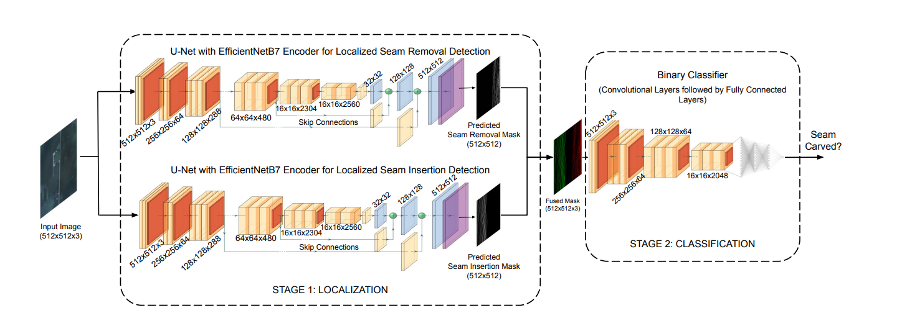
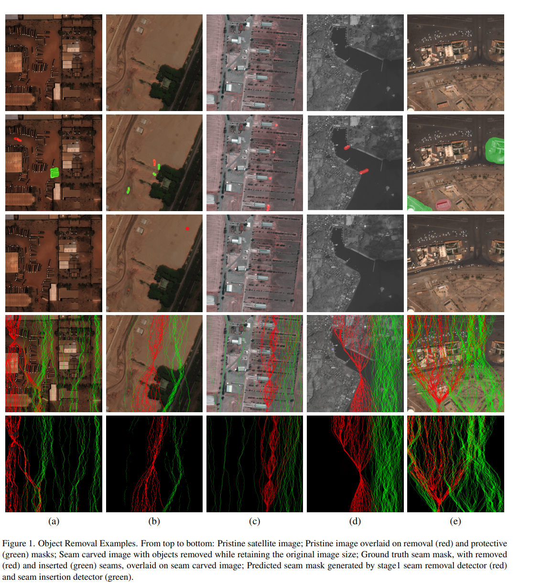

Seam carving is a popular technique for content aware image retargeting. It can be used to deliberately manipulate images, for example, change the GPS locations of a building or displace/remove roads in a satellite image. This paper proposes a novel approach for detecting and localizing seams in such images. While there are methods to detect seam carving based manipulations, this is the first time that robust localization and detection of seam carving forgery is made possible. We also propose a seam localization score (SLS) metric to evaluate the effectiveness of localization. The proposed method is evaluated extensively on a large collection of images from different sources, demonstrating a high level of detection and localization performance across these datasets. The code and datasets curated during this work will be released to the public.
we describe our approach for localized seam detection. At its core, the problem can be formulated as binary classification, where we would ultimately like to predict whether the given image is seam carved or not. In order to achieve this, we propose a two stage framework. Stage 1- Localization of Seams Stage 2- Classification
In this section, we give a brief overview on the characteristics of source datasets used, and how we generated our forgery datasets. Three common satellite imagery datasets (xView, xBD, and Orbview-3) have been used to evaluate our method
In this paper, we proposed a method to detect and localize seam carving based manipulations in satellite images. We use a two stage approach that first localizes removed/inserted seams via pixelwise classification and then performs a final classification if an image has been seam carved. We enable localization of seams as well as a generalizable framework across different datasets and seam carving techniques. Finally, we detailed the curation of three unique, large seam carving satellite image datasets that will be released to the public.